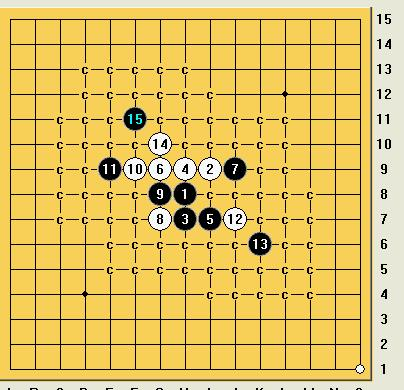

[学术讨论]关于银月问题
#1 [学术讨论]关于银月问题作者：紫菊 发表时间：2008-8-8 21:09:46
=======上图对应的爱五子棋谱代码如下，以便你拆解：========
h8i9h7h9i10j9g9
======================================================
大家对银月的这个5有什么看法？！ 我觉得已经很强了。
`
［此帖子已被 茗弈小刀 在 2009-4-22 20:39:41 编辑过］
#2 Re:关于银月问题作者：江南新绿 发表时间：2008-8-8 21:58:34
=======上图对应的爱五子棋谱代码如下，以便你拆解：========
h8i9h7h9i10j8h10j9k9g10i8f9g9e8d7f8f10
======================================================
大鱼在秋明的世锦赛上不是下过一盘吗？17胜！
如果白棋从１２手防守，切断黑棋上下攻击，可以防守的住的。
#3 Re:关于银月问题作者：紫菊 发表时间：2008-8-9 6:45:57
看到了，用实战不错，不知道这个5可有终结的可能性
·
#4 Re:关于银月问题作者：疏星终结 发表时间：2008-8-9 7:01:18
各位好早啊，学习中。。。。。#5 Re:关于银月问题作者：五子痴 发表时间：2008-8-9 13:07:27
嘎嘎`~欢迎大家以后有问题来这里讨论！
9和11都是黑必应，所以针对的是这个黑7的变化。如果白12走在这里好不好呢？个人感觉白棋控制局面还是比较容易 甚至已经优势！
=======上图对应的爱五子棋谱代码如下，以便你拆解：========
h8i9h7h9i10j8h10j9k9g10i8i6
======================================================
如果黑13走在下图这里（很强的走法） 白棋走到16之后 感觉还是白优 大家探讨下
=======上图对应的爱五子棋谱代码如下，以便你拆解：========
h8i9h7h9i10j8h10j9k9g10i8i6j6g9f9f11
======================================================
#6 Re:关于银月问题作者：茗弈小刀 发表时间：2008-8-9 14:33:27

#7 Re:关于银月问题作者：兔子哥哥 发表时间：2008-8-10 22:29:36
不知道为什么要走这个5？这个5不是已经必胜了吗？不明白？#8 Re:关于银月问题作者：26 发表时间：2008-8-10 22:57:38
14走I8/I11强。#9 Re:关于银月问题作者：疏星终结 发表时间：2008-8-11 0:36:56
这个5能完全终结么？期待中。。。
#10 Re:关于银月问题作者：雅典娜 发表时间：2008-8-11 11:00:58
不明白,这个银月是二打还是三打啊?感觉7手挺委屈的,为啥不考虑J9 ?
ATNA
#11 Re:关于银月问题作者：行云流水 发表时间：2008-8-11 11:14:10
现在依靠不少高手的努力，以前很多的猜测得到证实，不少原来的结论也被推翻有了更新的结论。但是五子棋技术如果要进一步发展，对新的打点的研究应该是有意义的。比如在五手N打时，现在讨论的打点就有意义了。
#12 Re:关于银月问题作者：nara 发表时间：2008-8-17 9:25:53
7楼的兔子哥哥,那个地毯5能发布一下吗?哈哈
#13 Re:Re:关于银月问题作者：我爱江俊男 发表时间：2010-4-28 3:23:24
14不可能那么走啊！！